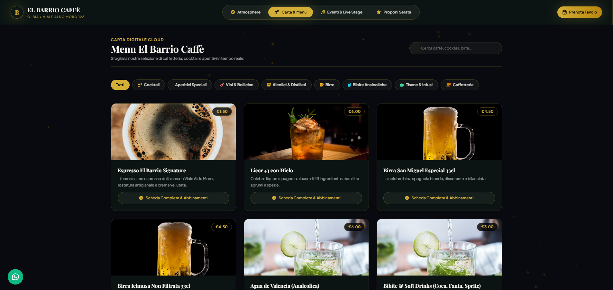
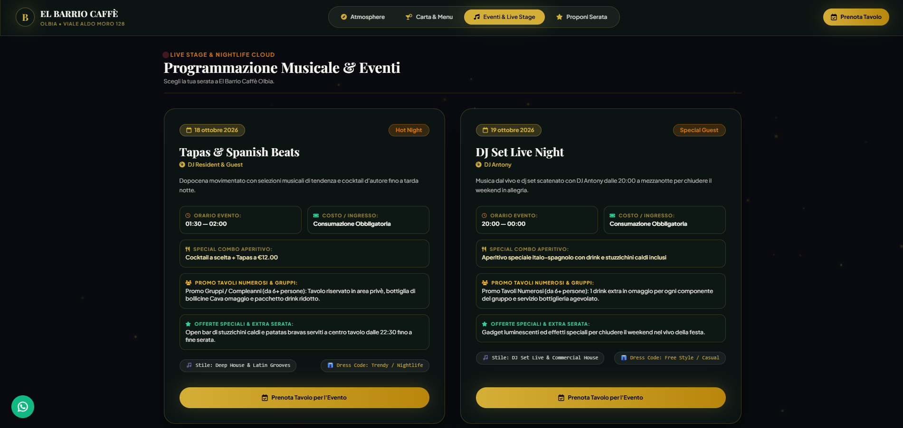
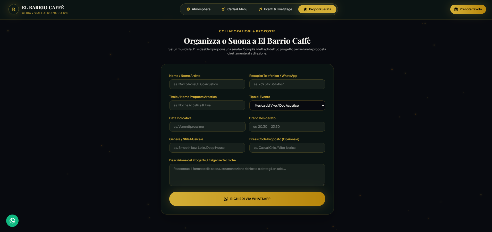

Rintracciabilità
Ottimizzazione per Google Maps e ricerche geografiche mirate.
Proposta di Sviluppo Digitale
Presentiamo un'infrastruttura digitale professionale, progettata per valorizzare l'identità del locale, semplificare la gestione quotidiana e attrarre nuova clientela a Olbia con efficacia e concretezza.
01 · Carta & Menu Cloud
Un catalogo digitale raffinato e sempre aggiornato, pensato per presentare cocktail, vini e tapas esaltando la qualità dell'offerta e guidando le scelte al tavolo.

02 · Intrattenimento & Live Stage
Le serate musicali, i concerti acustici e i DJ set rappresentano un forte elemento di attrazione. Una sezione dedicata permette di pianificare e promuovere ogni appuntamento.

03 · Ottimizzazione Mobile
La maggior parte delle ricerche e delle decisioni matura in mobilità. Il sito offre un'esperienza di navigazione fluida, rapida e intuitiva su qualsiasi dispositivo.
04 · Gestione Prenotazioni
Un sistema di contatto strutturato che riduce le interruzioni telefoniche durante i momenti di maggiore affluenza, raccogliendo le richieste in modo ordinato.

05 · Autonomia Operativa
Un'area amministrativa sicura che consente alla proprietà di gestire in piena autonomia i contenuti del sito senza dipendenza da interventi esterni.
06 · Visibilità Territoriale
Ottimizzazione orientata ai motori di ricerca e alle mappe per garantire che il locale emerga chiaramente quando residenti e visitatori cercano qualità in Viale Aldo Moro.
Ottimizzazione per Google Maps e ricerche geografiche mirate.
Un investimento strategico che consolida la presenza sul mercato.
07 · Prospettive di Crescita
L'infrastruttura è interamente sviluppata e configurata. La soluzione ideale per consolidare l'autorevolezza del marchio e ottimizzare i flussi di lavoro quotidiani.
Una rappresentazione digitale all'altezza dell'esperienza fisica in locale.
Riduzione dei carichi operativi e maggiore focus sull'accoglienza.
Infrastruttura pronta all'uso per avviare subito la nuova fase digitale.